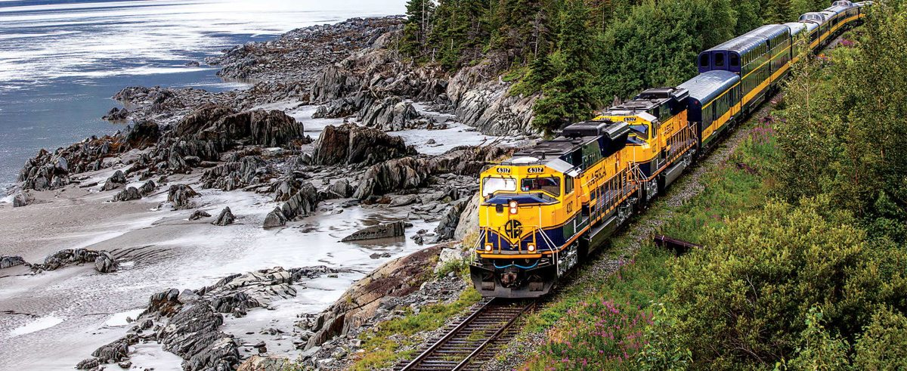

06:45：Take the Coastal Classic from Anchorage.11:20：Arrive in Seward and find the cruise-company shuttle immediately rather than leaving to explore town.Around 11:35:check in at the small-boat harbor counter.12:00：The 5.5-hour Kenai Fjords cruise departs.
Our Alaska Railroad day-trip package connected the train, boat and shuttle. Confirm the cruise operator, shuttle identification, meeting point and boarding cutoff when booking.
After check-in we squeezed in a roughly ten-minute round trip to the nearby Kenai Fjords Visitor Center. It was rushed, and the same visit was no longer possible after returning. Confirm boarding deadlines first; ten minutes is not a guarantee for every traveler.
Return connection and our thoughts
The cruise returned around 17:30, followed by the arranged transfer to Seward station. Our plan was to leave by roughly 17:50 for the 18:00 train to Anchorage, arriving at 22:15. This is a tight connection: confirm it with the package operator and do not assume the train will wait.
Both Anchorage–Seward and Anchorage–Denali are worthwhile scenic train journeys. We recommend GoldStar. You can request a scenic-side seat when collecting tickets, but preferences are not guaranteed. Meals and luggage services depend on the ticket.
PLAN / OBSERVE / EXPERIENCE
Getting to know this park
Route planning, landscape observations and travel experiences.
One connected day: railway and cruise
An early train from Anchorage, a boat from Seward and an evening train back. The rail segment reveals coast and valleys; the cruise shows glaciers meeting the sea. They complement each other rather than making the train merely a long transfer.
Most of the day is seated travel, but it is long. Prepare breakfast, warm waterproof layers and motion-sickness supplies beforehand. Avoid adding land attractions requiring separate transport.
Glaciers and fjords: big shapes, then details
Glaciers flow through valleys, eroding the floor and walls over time. After retreat, seawater occupies the trough, leaving a fjord. Locate sea, cliffs and glacier first, then examine crevasses, bare rock and vegetation.
Photographs can make ice look flat; use cliffs, boats or seabirds for scale. Calving, whales and other animals are not guaranteed. The whole coastline matters as much as a single dramatic moment.
Our experience: a visitor-center dash, genuinely rushed
We made a roughly ten-minute round trip to the harbor visitor center while connecting to the boat. There was no time for a thorough look, and trains, shuttles and queues will not always line up the same way.
Check cruise check-in and boarding deadlines before deciding. For exhibits, ranger services or an Exit Glacier walk at a relaxed pace, stay overnight in Seward.
Balancing walking and rest
Rest inside the boat and step onto the deck for views. Wind can make it feel colder; adjustable layers are more useful than a single heavy coat. You need not stay outside for the whole cruise.
This day trip does not include Exit Glacier or the long Harding Icefield hike. Allow extra time for land hiking rather than treating separate places as one day's activity.
Reading the itinerary
All times are local to Alaska. Recorded train and transfer times are shown; activities without an exact recorded time use morning, afternoon or their sequence in the day. Check seasonal timetables and booking confirmations when planning your own trip.
DAY 02
Kenai Fjords | Train and glacier cruise
A Coastal Classic railway and tidewater-glacier day. Our 5.5-hour cruise left at 12:00 and returned around 17:30. Book a product compatible with the train and confirm its shuttle and check-in arrangements.
Overnight: Anchorage
Arranged through Alaska Railroad
Days 2–5 were arranged as an Alaska Railroad package. Confirm the included trains, activities, hotels, transfers and meeting details in your documents. The Denali bus requires advance booking; the departure time is confirmed 48 hours ahead.
06:45–11:20Transport journal
Coastal Classic：Anchorage → Seward
The train traveled south along coast and valleys. Alaska Railroad arranged it together with the 5.5-hour cruise.

Coastal Classic train · Alaska Railroad · Photo sourceWhat to watch from the window
Follow Turnagain Arm into Kenai Peninsula valleys, observing tidal water, cliffs, rivers and glacial terrain. The train is the day's first attraction, not merely a way to the harbor.
Notice the transition between tidal shoreline, mountain walls and inland valleys. Passing a location does not mean you can get off and explore it.
Around 11:20–11:35Transfer journal
Station → cruise shuttle → small-boat harbor
We took the shuttle straight from the train and checked in at the counter around 11:35.
Before boardingOur experience
Quick Kenai Fjords Visitor Center visit
After check-in we made a rushed ten-minute visitor-center round trip. Confirm the boarding deadline before attempting it.
Visitor center | Exhibits, stamps and Junior Ranger
Ask about current services and booklet requirements before allocating exhibit and trail time. Passport stamps and badges are separate; booklet review requires a ranger and enough time.
Visit exhibits and trails that are open, leaving enough time to reach the next stop.
12:00–17:30Transport journal
Kenai Fjords glacier and fjord cruise
A 5.5-hour cruise with glaciers, fjords and wildlife, followed by the station transfer.
Tidewater glacier and fjord · NPS / S. RainoneKenai Fjords | Landscape guide
Glaciers flow from Harding Icefield toward the coast, eroding valleys over time. After retreat, seawater enters to form fjords. Notice ice, exposed rock, cliffs and water. Wildlife and calving are not scheduled shows; the captain determines the actual route and stops.
Find the ice–sea boundary, then bare rock and vegetation on each side. Floating ice, birds and marine mammals may appear, but nothing is guaranteed. Return to the cabin to rest after the cold deck views.
After dockingTransfer journal
Harbor → Seward station
Our arrangement aimed to transfer by about 17:50 for the 18:00 train. Do not assume the train waits for late passengers.
18:00–22:15Transport journal
Coastal Classic：Seward → Anchorage
Evening train back to Anchorage for the night.
What to watch from the window
Follow Turnagain Arm into Kenai Peninsula valleys, observing tidal water, cliffs, rivers and glacial terrain. The train is the day's first attraction, not merely a way to the harbor.
Notice the transition between tidal shoreline, mountain walls and inland valleys. Passing a location does not mean you can get off and explore it.
Choosing the 5.5-hour rail-and-cruise package
Our sailing was at 12:00. Alaska Railroad lists a compatible 5.5-hour product, while other cruises may leave at 11:30. Do not mix their check-in times. Confirm departure, docking and station transfer together.
Can you visit the center for a stamp that day?
We did a roughly ten-minute round trip between connections, but had no time for exhibits. Confirm cruise check-in, boarding cutoff and visitor-center hours. Skip it if there are queues or delays. For more time, stay in Seward on Day 2, visit the center and arrange Exit Glacier on Day 3, then take the 18:00 train back. Shift Denali a day later, making the trip at least ten days.
What if the train is late?
The cruise company may offer another sailing with available space. It does not guarantee waiting or that an alternative will include a tidewater glacier. Confirm delay and rebooking terms before relying on the connection.